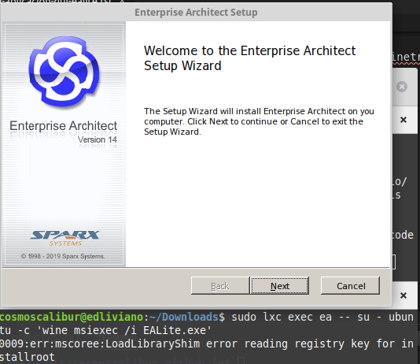
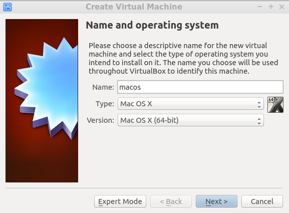

Entradas etiquetadas linux
Proton: Modo de compatibilidad de Steam
- 2024-06-04
¿Quieres jugar ese videojuego Steam que es soportado en Windows, pero no en Linux? Te cuento como usar el modo de compatibilidad de Steam en todos los juegos.
Configurar segundo teclado en Linux
- 2024-05-19
Si tienes un segundo teclado para conectar a tu equipo Linux, pero su distribución de lenguaje es diferente, te explico como configurar aquí.
Configurar RetroArch en Steam
- 2021-12-14
RetroArch es un agregador de emuladores y videojuegos para estos, multiplataforma (descargas de plataformas soportadas) y de código abierto. Es posible instalar RetroArch de forma directa en el sistema operativo o a través de Steam, teniendo este algunas ventajas adicionales de unir las caracterśticas de Steam Play y el almacenamiento de estado en Steam Cloud. Adicional a esto, sin duda es una ventaja para el desarrollo de la comunidad alrededor de este medio adicional de distribución.
Usar Ubuntu en Windows con WSL2
- 2020-10-05
Como contaba en una que otra publicación, por motivos laborales mantengo mucho en Windows pero es necesario en ocasiones tener Linux a la mano. Sin duda a nivel de desarrollo Linux toma cada vez mayor relevancia y es notorio cuando Microsoft le da relevancia al soporte de Linux en su ecosistema, no solo en despliegues en nube sino también en el mismo escritorio. En esto último, referimos a WSL (Windows Subsystem for Linux) [wsl].
Instalar paquetes snap en Linux Mint 20
- 2020-06-29
¿Ya tienes Linux Mint 20 y deseas instalar paquetes Snap? Mint ha decidido deshabilitar la instalación de Snap por defecto y es necesario cambiar la configuración de apt para poderlo hacer.
Usar la cámara de tu celular como webcam
- 2020-05-17
Con la nueva normalidad que vivimos alrededor de la virtualidad, el uso de videollamadas se ha incrementado y muchas cámaras incorporadas en los equipos no poseen buenas características (o son ausentes). Adicional, el soporte de opciones como usar el celular, una buena alternativa para no comprar una cámara web, es amplio en Windows pero no en Linux.

Crear contenedor Docker aplicación GUI - EALite
- 2019-11-22
Dando continuidad al uso de contenedores que inicie en la publicación anterior, Crear contenedor LXC para aplicación GUI - EALite, reproduciré la instalación de Enterprise Architect Viewer (EALite) con Docker (y por supuesto, Wine). Si deseas reproducir el ejemplo de este caso, requieres reproducir la el artículo mencionado para extraer el directorio de Wine.
Crear contenedor LXC para aplicación GUI - EALite
- 2019-11-11
El uso de contenedores en la industria del software se ha extendido ampliamente y no es de extrañar, ofrece a los desarrolladores la posibilidad de mejorar el aislamiento de sus servicios y de ahí hacerlo menos susceptible a errores por colisiones con otros servicios o conflictos de dependencias. Al mismo tiempo, son una alternativa más amigable en recursos respecto a las máquinas virtuales.
Instalando paquetes en Linux (Mint)
- 2019-10-22
En Linux ahora tenemos muchas más opciones para instalar nuestros programas favoritos y de uso diario, según los intereses personales en reducir espacio en disco, aumentar estabilidad, mejorar seguridad, disponer siempre de la última versión, tener muy buena integración con el sistema operativo o no requerir permisos de administrador. Algunas de las estrategias, incluso facilitan que el mismo mecanismo podemos usarlo en más de una distribución Linux y así disponer de una transición más simple.
Recuperar el arranque de tu Moto G5 en Linux
- 2019-10-21
Recientemente, aunque cambié a un Moto G7, pensaba restaurar el celular de fábrica pero salió mal el proceso (no siempre es fácil si pretendes eliminar el acceso a administrador -root- y el recovery personalizado -TWRP-).
Ejecutando macOS en Linux
- 2018-01-18
Debo admitirlo, no me gusta Mac y sigue sin gustarme, pero en múltiples ocasiones se hace necesario poder disponer de un Mac al igual que de un Windows para efectos de pruebas o de correr software específico cuando no hay de otra. Por este caso me di a la tarea de buscar como lograr ejecutar macOS en mi equipo Asus que posee Linux instalado de la forma más fácil posible. A continuación, como ejecutar macOS (específicamente hackintosh) en tu equipo Linux (el procedimiento aplica también para Windows).
Con calma para SteamOS
- 2014-04-20
Bueno, es un poco raro que sin escribir hace mucho, lo primero que escriba sea del mundo linux que del mundo de la ciencia y particularmente de la física que es mi especialidad. Pero resulta que a veces es un poco más fácil escribir sobre cosas que no toque justificar tanto.
20 años de Linux
- 2011-04-10
Hace 20 años, Linus Torvalds tomo la decisión de compartir su sistema operativo con el mundo. No mucho después, decidió licenciar este bajo General Public Licence (GPL). Este momento histórico cambio todo en el mundo en la historia de la computación.